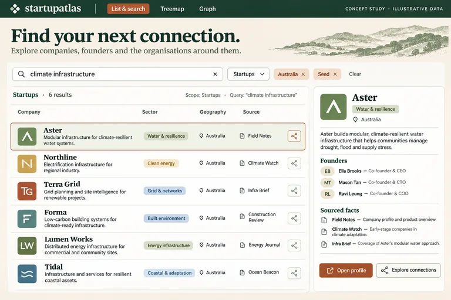
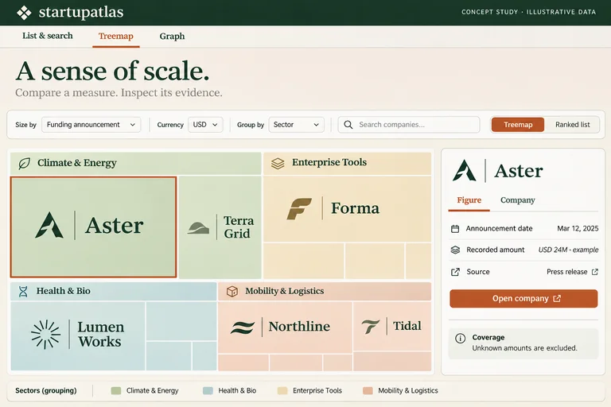
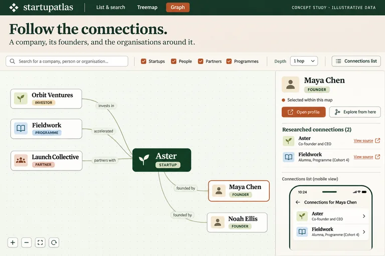
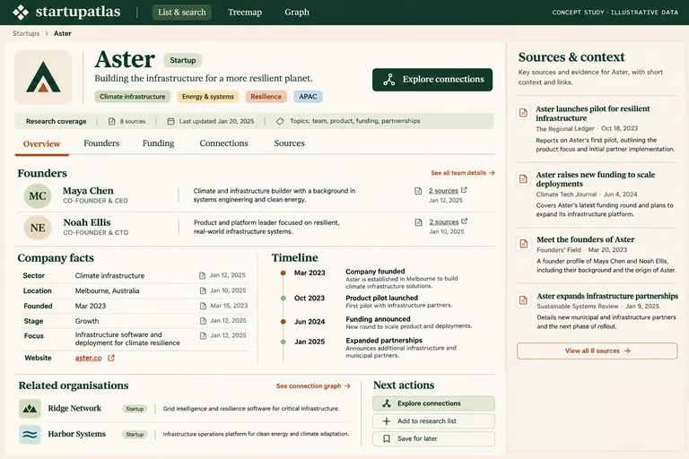
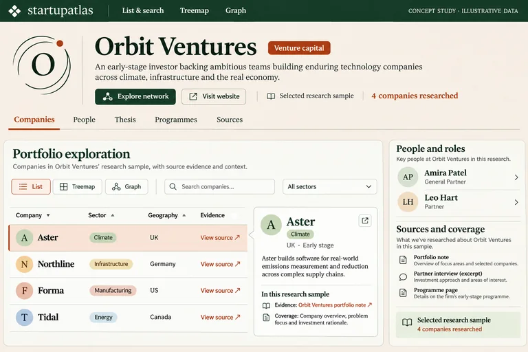

Startup Atlas / the working reference
The language
of exploration.
Built from five explorer wireframes. Follow their visual decisions into shared components, try the states and assemble a research view.
Careful composition.
The visual source
Five wireframes. One shared language.
The source studies establish search, maps, identities and evidence placement. The live previews show the explorer’s warm paper, forest navigation and rust selection.

List & searchSearch, select, inspect.
TreemapMeasure beside evidence.
GraphFollow named connections.
Startup explorerA company dossier.
Partner / VCCompanies with context.Carry into every view
One masthead. A readable primary identity. Explicit selection. Source context within reach.
Translate the layout
Place evidence beside research on wide screens, then follow the same reading order on narrow screens.
Use the published research
The images contain fictional examples. Actual fields, figures and relationships come from sourced records.
Continue the direction with four new journeys—founder profiles, funding rounds, company comparisons and research collections—and a list/search elevation study. Explore the proposed views
The component workbench
Small parts. Consistent behaviour.
Choose a component, explore its variants and take the markup with you. Each example names its owner and makes its interaction rules explicit.
Loading the component reference…
One ecosystem, five perspectives.
Each view answers a different question. These are the working pages, using the same published data and components.
Which entities should I explore?
Search across startups, people, partners, providers and programmes, then follow a result into its profile or graph.
Interaction
Search and narrow by entity type. Inspect a row beside the results, then open its profile or graph while keeping a route back to the search.
Data contract
Results describe the researched snapshot. A matching name or logo does not verify an organisation or relationship.
Next refinement
Add richer structured facets as sourced fields become available, and shareable links to a selected record within a search.
Compose around the question
A recipe for every perspective.
Explore the regions, responsive reading order and scroll ownership behind each view. The diagrams describe structure; the live previews above show the product.
Loading the layout recipes…
The Atlas foundations.
Forest, warm paper and rust, with soft category colours. Raised controls, inset fields and rounded research panels share one token system.
Follow a company.
Discover a network.
Founders & connections
Clear labels, compact metadata and readable source notes. A profile name stays legible at every scale.
12 / 46 USD 200,000,000Spacing
Shape & motion
8px controls. 13px panels. Visible focus. Short transitions. Graph movement serves exploration and respects reduced motion.
Loading the full runtime token reference…
From the published snapshot
The components, in context.
These examples read the same published research as the Atlas. Follow an entity or its evidence to review how the shared language works with real records.
Entity labels
Type is named in text; colour reinforces it.
Action hierarchy
One clear next action, with a quieter source link.
Entity row
The directory and this specimen use the same renderer.
Loading an entity specimen…
Relationship
A named predicate and evidence, with room for uncertainty.
Loading a sourced relationship…
Make the evidence visible.
Confidence belongs to a specific claim. Unknown information needs its own treatment.
Recorded fact
Loading a sourced fact…
Coverage language
Checking the research snapshot…
Use the full filtered denominator. Missing amounts stay unknown; currencies and historic observations stay explicit.
Built to carry forward.
The runtime tokens own the values. The design and interaction contracts explain how to use them.
- Start with the shared foundations.
Load
design-tokens.cssbeforeatlas-ui.css. Use the canonical icon registry and entity renderers where they already own a pattern. - Compose for the research question.
Choose the relevant layout recipe. Preserve the source, date, coverage and meaning of every field as the layout changes.
- Review the full interaction.
Try keyboard navigation, narrow layouts, missing research and unavailable data. Compare the component example with its working view.
Live previews and sourced examples use the current published research. Workbench specimens use fictional content; layout diagrams describe structure. Planned refinements are labelled separately.
Download the assets & reference kit